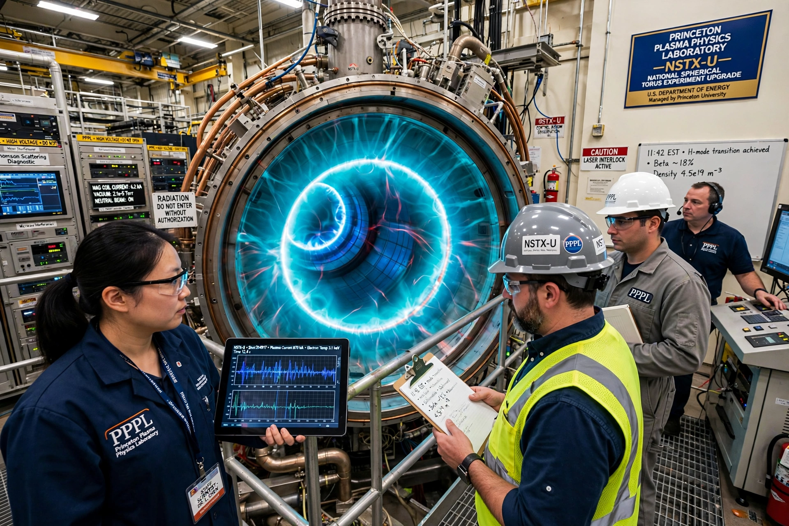

The Princeton Plasma Physics Laboratory (PPPL) is a United States Department of Energy national laboratory for plasma physics and nuclear fusion science, managed by Princeton University.
The laboratory began in 1951 as the classified Project Matterhorn, in which astrophysicist Lyman Spitzer proposed the stellarator — a twisted magnetic configuration for confining hot plasma. Declassified in 1958, it was renamed PPPL in 1961. When Soviet tokamak results surpassed stellarators in the late 1960s, PPPL converted its Model C stellarator into the Symmetric Tokamak.
The Tokamak Fusion Test Reactor (TFTR, 1982–1997) achieved world-record fusion power with deuterium–tritium fuel, producing 10.7 megawatts in 1994 and record ion temperatures. Its successor, the National Spherical Torus Experiment (NSTX, upgraded as NSTX-U), explores the compact spherical tokamak. PPPL also collaborates on ITER in France and operates smaller plasma-science experiments.